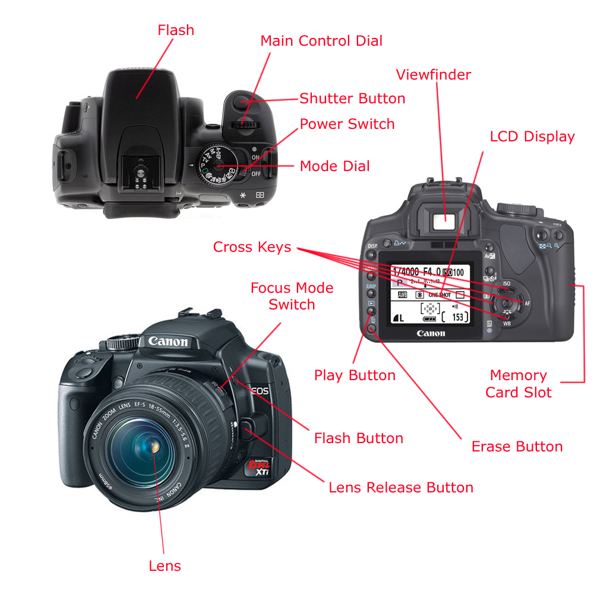

Digital photography is the use of a camera equipped with electronic photosensors and a lens to create focused digital images rather than images on film. Watch the video below to learn more.
Digital cameras or "DSLR's" are typically composed of a body and either an attached or detachable lens. Check out the diagram below to see an overview of some of the different parts of a DSLR camera. 
Photo Diagram courtesy of Zacksavage.wordpress.com
Click here to see if you can identify the different parts of the camera.